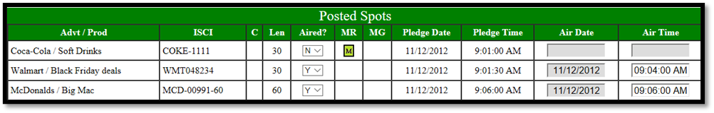
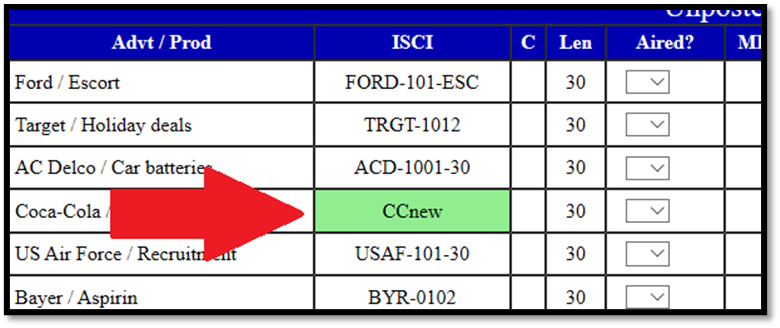
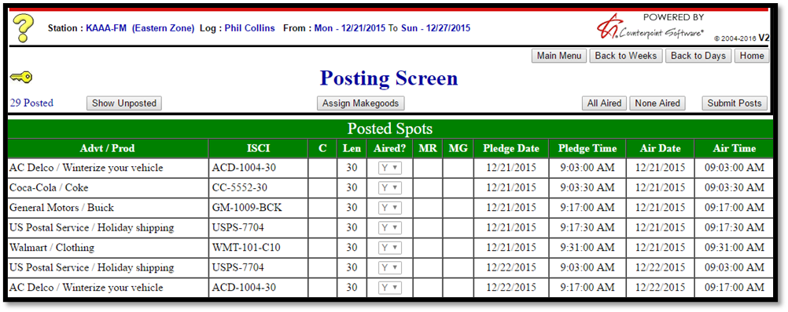

Posting Affidavits
Affidavits are posted after airing on the Posting Screen. The Posting Screen is accessed by pressing the “Post Affidavits” button on the Main Menu.
After pressing the “Post Affidavits” button, the Affidavit Citation page will appear. On this page, the station user will be asked to agree to a statement verifying all the information they are about to post is accurate and true. This text comes from Affiliate Site Options -> Messages -> Citation.
After agreeing to the text on the Citation screen, users will select the week that they wish to post and continue to the Posting Screen.
Posting Screen Overview
After selecting the week or the individual day to post, the Posting Screen will appear. The look of the Posting Screen has changed, and several additional fields have been added.
Version 1 Posting Screen:
Version 2 Posting Screen (below):
Posting Screen Buttons
The following buttons are available for use on this page:
- Main Menu: Return to the Main Menu.
- Back to Weeks: Return to the list of available affidavit weeks.
- Back to Days: Return to the list of available affidavit days.
- Home: Return to the Login page.
- Key icon: Press the key to see additional information about the fields that are displayed.
- Show Posted/Show Unposted: This button toggles between viewing posted and unposted spots.
- Assign Makegoods: If makegoods are enabled for this vehicle, the “Assign Makegoods” button can be used to create makegoods from missed spots.
- All Aired: Sets the aired status to “Yes” for any spot that had not been previously updated.
- None Aired: Sets the aired status to “No” for any spot that had not been previously updated.
- Submit Posts: This button is used to post and save any changes that have been made.
Spot Information
The following information is shown for each spot:
- Advt/Prod: The name of the advertiser and the product.
- ISCI code: The unique identification code for the copy.
- Comment: If a copy instruction comment is available, a blue “speech bubble” icon will appear in the “C” column. Click the icon to see the comment. (This comment will also appear on the log and the printed log.)
- Length: The length (in seconds) of the spot.
- Aired?: This field is used to mark whether the spot aired or not.
- MR: Missed Reason. When a spot has been missed, the missed reason will be visible in this field (if Missed Reasons are enabled).
- MG: Makegood. If the spot is a makegood, it will be indicated here.
- Pledge Date: The date the spot is pledged to air.
- Pledge Time: The time the spot is pledged to air.
- Air Date: The date the spot aired (this cannot be changed).
- Air Time: This field is used to enter the time the spot actually aired.
Posting Screen Actions
The following main actions can be performed on the Affidavit screen:
- Edit the Aired status for a spot to mark whether a spot aired or didn’t air by selecting the correct aired status from the “Aired?” dropdown menu or by pressing the “All Aired” or “None Aired” buttons.
- Edit the Air Time for a spot so that the affidavit has the correct air time for each spot.
- Create makegoods from missed spots by using the “Assign Makegoods” button (when Makegoods are enabled).
- Mark the spots as posted by pressing the Submit Posts button. Once an affidavit has been fully posted – that is, all the spots have been updated and posted – the affidavit will be marked as ready to be returned to the network and the airing information will be imported the next time the web import is run.
When the Affiliate Site Options setting “Allow posting on today and future days” is not checked on, then spots pledged to air today or in the future cannot be posted. For those spots, the Air Date and Air Time Field will be grayed out. Once the spots are in the past, they will be able to be posted normally. In the example below, today’s date is 3/16/17. The spots on 3/15/17 (in the past) can be posted normally, and the spots pledged to air on 3/16/17 (and later) cannot be posted, as the aired status field and air time field are both grayed out.
Missed Spots and Makegoods
Spots can be marked as missed by selecting “N” from the “Aired?” dropdown. If Missed Reasons are required, the user must pick a missed reason from the list of missed reasons, then press OK.
Spot that have been missed are indicated with a letter “M” in the “MR” (Missed Reason) field. If the missed spot has not been made good, the “M” image will have a red background, as shown below.
The missed reason can be changed by pressing the “M” icon and selecting a different missed reason.
When a missed spot has been made good, the color of the “M” icon changes from red to green to indicate that it has been made good, as shown in the image below.

You can hold the mouse pointer over a green “M” icon to see the makegood date and time.
Makegood spots are indicated with an “MG” icon in the “MG” (Makegood) field.
The “MG” icon can be pressed to bring up a pop up screen with information about the makegood (as shown below), and which can be used to edit the makegood air date and time by simply typing in the changed air date and time.
The makegood air time can also be manually edited in the Air Time field on the main Posting Screen itself.
Makegoods on Events
When creating a makegood for a spot from an event (on a sports vehicle), it must be made good on a date on which there is an event. After entering the makegood air date, if there are events available on the makegood date, a screen will appear in which the event can be selected by checking the “Selected” checkbox on the left side of the screen and pressing OK, as shown in the example below.
Note: makegoods and the “pledge by event” feature are incompatible (this is the feature that requires website users to specify whether a game is carried or not carried). If a sports vehicle has the “pledge by event” feature turned on, then makegoods are not allowed for that vehicle. If a sports vehicle does not have the “pledge by event” feature turned on, then makegoods are allowed for that vehicle.
Changing Copy
On the Affidavit page, station users can change the ISCI code so that it correctly reflects the copy that aired for any spot that has not been exported back to the Affiliate system. To change the copy, hold the mouse over the ISCI field for a spot and click the mouse button.
This will bring up the “Change ISCI” dropdown. If there’s more than one piece of copy for the selected advertiser for that station, vehicle, and week, it can be picked from the dropdown list and applied to the spot by pressing Save.
To enter a new ISCI, users must select “New” from the “Change ISCI” popup, which will bring up a New ISCI popup box as shown in the picture below.
Type the new ISCI code into the “New ISCI” field, then press Save to add the new ISCI code for the selected spot. Note that some characters, such as the dollar sign, question mark, and other symbols, cannot be entered into the ISCI code field, and will be removed if used.
A changed or newly entered ISCI code will be indicated with a green background color, as shown in the picture below.

New and changed ISCI codes are indicated on affiliate spot reports with a plus sign.
Manually Setting the Spot Length to 10 or 15 Seconds
When the copy rotation comment contains the text string “:10 :15”, then the station user must manually set the spot length to 10 or 15 seconds on the Affidavit page.
The spot length will be set to a blank value, as shown in the picture below.
Station users must set the length manually, to either 10 or 15 seconds, by selecting the desired length from the length dropdown.
Once the length has been set to either 10 or 15, the chosen length will appear as the spot length, as shown in the picture below, where the spot now shows a length of 15.
The length must be entered before the aired status can be set.
Posted Affidavits
Once an affidavit has been fully posted and imported back to the Affiliate system, it will no longer be available for editing by station website users.
The look of a posted affidavit has also changed.
Version 1 Posted Affidavit:
Version 2 Posted Affidavit:

Additional Website Options
The following additional website options are present and work the same as before:
- Traffic Vehicle Options:
- Suppressed Log screen and ISCI codes on the Affidavit
- Audio Content button on the Log screen
- Feed Date and Time on the Log screen
- Spot Summary table on the log and printed log
- Avail names on the log and affidavit
- Suppressed rotation comments
- Carry Status for “Pledge by Event” sports vehicles
- Affiliate Agreement Options:
- Suppressed affidavit screen for Marketron vehicles
- Monthly posting
- Multicast agreements
- Stratus (formerly Cumulus) exports and imports